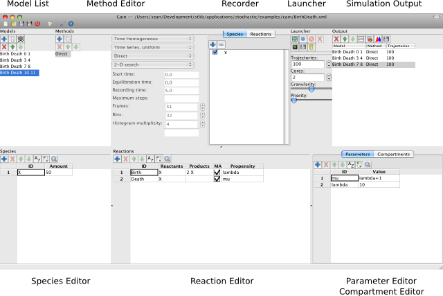

|
Cain: Stochastic Simulations for Chemical Kinetics |
News
September 25, 2010
Version 1.5 is released. It features:
- Support for events.
- Expanded documentation.
- Bug fixes.
May 23, 2010
Version 1.4 is released. It features:
- Improved plot configuration.
- More data export options.
February 14, 2010
Version 1.3 is released. It features:
- Improved plotting for histogram output.
- Universal binaries for Mac OS X.
- Update to Python 2.6 for MS Windows distribution.
- Expanded documentation.
Introduction
Cain performs stochastic and deterministic simulations of chemical
reactions. It can spawn multiple simulation processes to utilize
multi-core computers. It stores models, simulation
parameters, and simulation results
in an XML format. In addition, SBML
models can be imported and exported. The models and simulation
parameters can be read from input files or edited within the program.
The GUI (Graphical User Interface) shown below is written in
Python and uses the
wxPython toolkit.
The solvers are implemented as command line executables, written in
C++, which are driven
by Cain. This makes it easy to launch batch jobs. It also simplifies the
process of adding new solvers. Cain offers a variety of solvers:
- Gillespie's direct method.
- Gillespie's first reaction method.
- Gibson and Bruck's next reaction method.
- Tau-leaping.
- Hybrid direct/tau-leaping.
- ODE integration.

Stochastic Simulations.
-
The SBML (Systems Biology Markup Language)
homepage has links to many software projects.
-
Linda Petzold and her research group at
UCSB
(including Hong Li,
Kevin Sanft,
Min Roh,
and
Brian Drawert)
study stochastic simulation methods and have developed
StochKit.
-
Darren Wilkinson,
provides software and test models at his web site.
-
DSMTS
(Discrete Stochastic Models Test Suite) is a test suite in SBML format.
-
Dizzy
is a chemical kinetics stochastic simulation software package written in
Java.
-
COPASI
is a software application for simulation and analysis of biochemical networks.
-
FERN
(Framework for Evaluation of Reaction Networks) is an extensible and
comprehensive framework for efficient simulations and analysis of chemical
reaction networks written in Java.
-
CellMC
is an open source program generator that compiles a mesoscopic model of a
biochemical reaction network, expressed as SBML, into an executable program
that realizes SSA for that model; the program can then be run for any final
simulation time and number of realizations.
-
STOCKS
is public domain (GNU GPL) software for stochastic simulations of
biochemical processes.
-
SimBiology
provides graphical and programmatic tools for modeling, simulating, and
analyzing biological systems.
Open-source software resources.
-
SourceForge hosts a wealth of
software projects.
-
freshmeat maintains the Web's largest
index of Unix and cross-platform software.
Software.
 / Last Modified: September 25, 2010
/ Last Modified: September 25, 2010